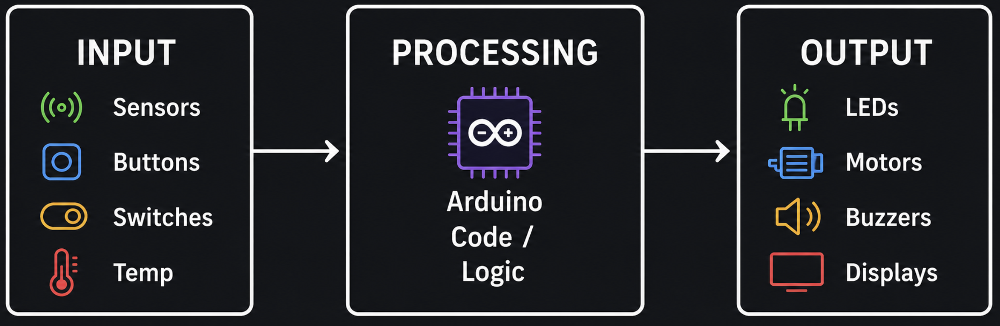
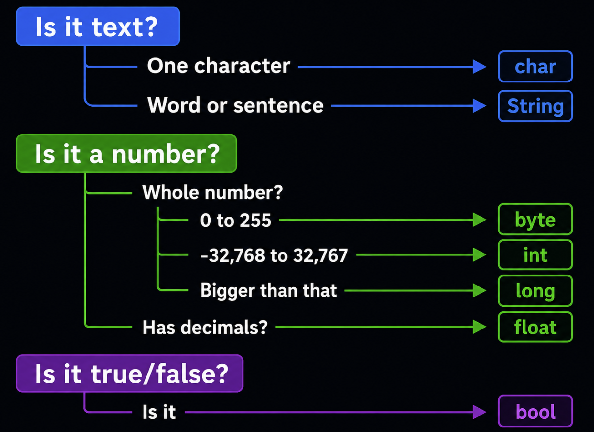

2. IoT Programming Introduction
2.1 The IoT Programming Workflow
Every IoT program follows the same three-step pattern:

| Step | What it means | Example |
|---|---|---|
| Input | The device reads data from the environment | A temperature sensor sends a reading |
| Process | The program makes a decision or calculation | If temperature > 30, set alert = true |
| Output | The device acts on the result | Turn on the red LED or buzzer |
This pattern applies to every IoT project from a simple blinking LED to a smart home system.
2.2 Variables and Data Types
A variable is a named container that stores a value in your program's memory. You can think of it like a labeled box — the label is the variable's name, and the contents are its value.
2.2.1 Declaring Variables
In the Arduino programming language (C/C++) used across most microcontroller boards, including ESP32, ESP8266, and STM32, you declare a variable by specifying its type, name, and optionally an initial value.
Syntax:
1 | |
Example:
1 2 | |
- Type — what kind of data it holds (
intfor whole numbers,floatfor decimals,Stringfor text,boolfor true/false) - Name — how you refer to it in code
- Value — the data stored inside, which can change during the program
Example:
1 2 | |
That's why it's called a "variable" — its value can vary over time as your program runs.
2.2.2 Data Types
A data type tells the program what kind of value a variable will hold. Choosing the right type matters because microcontrollers have limited memory — using the smallest type that fits your data keeps your program efficient.
Note: Exact sizes depend on the board. The table below shows values for AVR boards (Uno/Nano). On ESP32/ESP8266/STM32,
intis 4 bytes (same range aslong) anddoubleis a true 8-byte double with more precision thanfloat— always check your board if memory or precision is tight.
| Type | Size (AVR) | Range (AVR) | Best for | Example |
|---|---|---|---|---|
int |
2 bytes | -32,768 to 32,767 | Most whole numbers | int count = 10; |
long |
4 bytes | -2,147,483,648 to 2,147,483,647 | Very large numbers, timestamps | long big = 99999; |
float |
4 bytes | ±3.4e-38 to ±3.4e+38 | Decimal numbers | float temp = 22.5; |
double |
4 bytes | Same as float on AVR (8 bytes, more precise, on ESP32/ARM) | Decimal numbers | double x = 3.14; |
char |
1 byte | -128 to 127 (used to hold ASCII character codes 0–127) | Single characters | char letter = 'A'; |
String |
varies | Any text | Words and sentences | String s = "Hi"; |
bool |
1 byte | true or false |
On/off, yes/no states | bool on = true; |
byte |
1 byte | 0 to 255 | Small positive numbers, pin values | byte b = 255; |
Examples:
1 2 3 4 5 | |
Declaring without assigning a value (assign later):
1 2 | |
Declaring multiple variables of the same type:
1 | |
2.2.3 Variable Naming Rules
When naming variables, you must follow these rules:
| Rule | Valid | Invalid |
|---|---|---|
| Must start with a letter or underscore | sensor, _count |
1pin, 9value |
| Can only contain letters, numbers, and underscores | led_pin, temp2 |
my-var, room temp |
| Cannot use reserved words | myInt, ledState |
int, void, if, return |
| Names are case-sensitive | myVar ≠ myvar ≠ MYVAR |
— |
Best practices (not required but make your code easier to read):
- Use camelCase for variable names:
ledPin,roomTemperature,buttonPressed - Use UPPER_CASE for constants:
MAX_SPEED,LED_PIN - Choose descriptive names that explain what the variable stores
Good vs Bad examples:
1 2 3 4 5 6 7 8 9 10 11 12 13 | |
2.2.4 Variable Scope
Scope determines where in your code a variable can be accessed. In C/C++, any microcontroller program written with the Arduino framework has two main scopes:
| Scope | Declared | Accessible | Lifetime |
|---|---|---|---|
| Global | Outside all functions (top of file) | Everywhere in the program | Entire program runtime |
| Local | Inside a function or block { } |
Only inside that function/block | Destroyed when the function/block ends |
Basic example:
1 2 3 4 5 6 7 8 9 10 11 12 | |
Block scope (inside if, for, while):
1 2 3 4 5 6 7 8 9 10 | |
Why scope matters — a practical example:
1 2 3 4 5 6 7 8 | |
Tip: Use local variables whenever possible. Only use global variables when you need to share data between functions or keep a value between
loop()cycles.
2.2.5 Constants (Values that Never Change)
A constant is a variable whose value is locked once set — it cannot be changed anywhere in the program.
Use constants for values that should stay fixed, like pin numbers or physical values.
Why use constants instead of regular variables?
| Variable | Constant | |
|---|---|---|
| Can change value? | Yes | No — locked at declaration |
| Risk of accidental change? | Yes | No — compiler catches it |
| Best for | Values that change (sensor readings, counters) | Fixed values (pin numbers, thresholds) |
Syntax — use the const keyword:
1 | |
Examples:
1 2 3 | |
What happens if you try to change a constant:
1 2 | |
Example — constants vs variables together:
1 2 3 4 5 6 7 8 9 10 11 12 | |
Another way to define constants — #define:
1 2 | |
Note: Use
constinstead of#definewhere possible —constis type-checked by the compiler, while#defineis a simple text substitution.
Naming convention: Use UPPER_CASE with underscores for constants to visually distinguish them from regular variables.
2.2.6 How to Choose the Right Type
Use this flowchart to pick the smallest data type that fits your value:

2.2.7 Example: Variables in a Circuit
Open this Wokwi simulation to see variables and data types used in a working circuit: https://wokwi.com/projects/470387372012322817